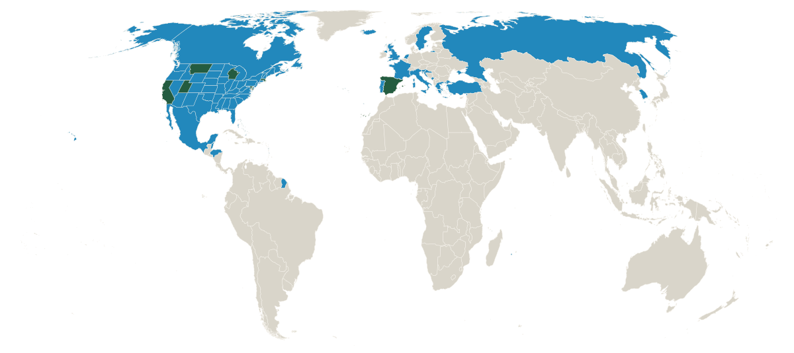

About
I work on AI risk. Humanity can usher in an unprecedented era of innovation and prosperity if we can secure the development of superintelligence. I cofounded Lateral Workshop, write on LessWrong, and researched how language models translate.
In 2022 I joined Utah State’s GASRATS satellite team, where I helped prototype antenna hardware. I also raced mountain bikes and produced an award-winning music video. My lifelong passion is skiing in Alta, Utah. I also like typewriting and crosswords.
Favorites
Writing
- Legible vs. Illegible AI Safety Problems — Wei Dai
- My journey to the microwave alternate timeline — Malmesbury
- FAQ: Isn’t AGI coming too soon for reprogenetics to help? — TsviBT
- The Long (Self-)Correction — Wei Dai
- The magic of through running — Benedict Springbett
- Fixing retail with land value capture — Phil Levin and Ben Southwood
Quotes
One heuristic for distinguishing stuff that matters is to ask yourself whether you’ll care about it in the future. Fake stuff that matters usually has a sharp peak of seeming to matter. That’s how it tricks you. The area under the curve is small, but its shape jabs into your consciousness like a pin.
Paul Graham, Life is Short
But I know, now, that there’s nothing wrong with feeling strongly. […] But I know, now, that it is rational to feel.
Eliezer Yudkowsky, Feeling Rational
Places
- Alta, Utah
- Grand Teton National Park, Wyoming
- Madrid, Spain
- Istanbul, Turkey
- Glacier National Park, Montana
- Boston, Massachusetts
- The Alaskan Panhandle
Where I’ve lived and traveled


Lived in Spain and the United States (Utah, Montana, Wisconsin, Maryland, Massachusetts, and California).
Visited All 50 U.S. states, the Bahamas, Belize, Canada, Croatia, France, Greece, Honduras, Iceland, Italy, Mexico, Montenegro, the Netherlands, Portugal, Russia, Slovenia, South Korea, Sweden, Turkey, the United Kingdom, and Vatican City.